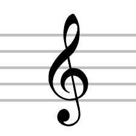
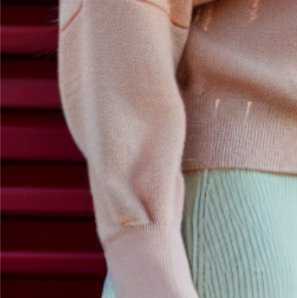

hello, it's mariana.
i'm a developer.
I’m a recent graduate from the UC Berkeley with experience ranging from a university research setting to industry.
My interests span topics such as computer vision, gen AI, and backend development.
machine learning

Text2Sound Plugin
A DAW plugin that generates sound effects from textual descriptions using AI.

Fashion Stable Diffusion Fine-tuned
Fashion synthesis assistant tool generates fashion images via a text prompt.
front-end development
DogIt App
Contributed to a dog healthcare app. Demonstrated skills include React and Web development.
Leetcode & Interview Prep
Guide to interview preparation including data structures and algorithms.
graphics

Water Simulation
Implement underlying physics governing fluid dynamics simulations with water.

Rasterizer
Rasterization in graphics.
resume
Work Experience
-
PlayStation, Machine Learning Engineer Intern
May 2023 - August 2023
- Trained a generative model on a large-scale facial UV-texture dataset with the aim of generating brand new face textures as a tool for animators to use
- Used PyQT to design part of the user interface in python
-
Vyrill, Contract MLE Project Member
August 2022 - December 2022
- Worked on extracting demographic data using CNN-based architectures on video, and NLP on transcription and audio with AWS platform (GitHub)
-
Auburn University , Research Intern
May 2022 - July 2022
- Developed novel path planning algorithm using Deep Q-Learning model for UAV search and rescue applications ( NSF REU on Smart UAV Program) (Slides)
- Implemented search algorithm on drone simulation software including Microsoft’s Airsim on Unreal Engine and Ardupilot Software In The Loop (SITL) Simulator
- Trained object detection model on thermal data to recognize a person, over 95% accuracy
-
DePaul University , Research Intern
June 2021 - August 2021
- Used Tensorflow to build a convolutional neural network for classification of age-related macular degeneration using (800+) OCT retinal scans with more than 95% accuracy
- Studied deep learning concepts (activation functions, loss functions, normalization, etc.)
- Published paper at SPIE Digital Library (MedIX REU Program)
Research Papers
- Object Searching, Acquisition, and Classification Using Stabilized Thermal Imaging on Smart UAVs for Use in Low-Cost SAR Applications
- Human-in-the-loop deep learning retinal image classification with customized loss function
Awards and Scholarships
- SEED Scholars Honors Program
- Regents and Chancellor's Scholarship Program
- UCSD Covid-19 Data Challenge Honorary Mention
Skills
- Experience with Python (Numpy, Matplotlib, Pandas, OpenCV, Sklearn), Java, C, C++, OpenGL, HTML, CSS, Javascript, React, SQL, CMake, Git, PostgreSQL, Go, Golang
- Skills in Scheme, Front End, Backend Development, Data Analysis, OO programming, End-to-end project development, Full Stack
- Well-versed in Deep Learning (Tensorflow, Keras, Pytorch), Data Visualization tools
Interests
Self-teaching music production, cooking, writing, [...more interests here].